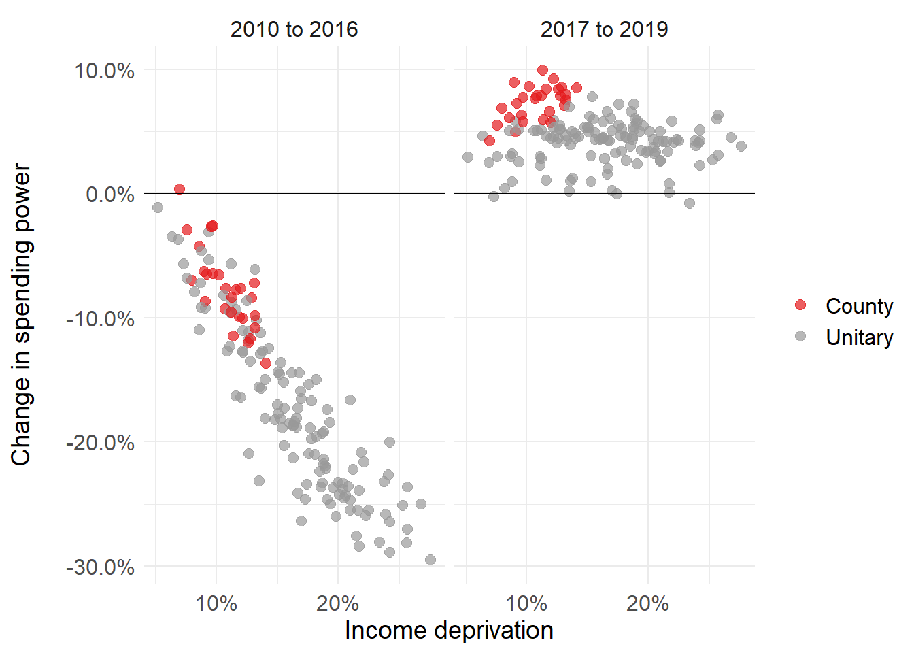

The most deprived parts of England have borne the brunt of public spending cuts since 2010. As spending now begins to increase, this could bring relief to some of the hardest-hit local councils. However, this analysis shows that the gains - unlike the cuts - will be shared fairly evenly among both affluent and deprived parts of England.
In 2010 the UK government embarked on a series of major spending cuts to reduce its budget deficit, in response to the financial crisis. The department responsible for local government - now the Ministry of Housing, Communities and Local Government (MHCLG) - was forced to make some of the greatest savings.
This translated to cuts in funding for local councils across England. Local councils who were most reliant on central government grants - as opposed to locally raised revenue - were hit the hardest by these cuts. These also tended to be the most deprived parts of England.
To illustrate this, we looked at the relationship between local councils’ deprivation and change in ‘spending power’ between 2010 and 2019. This is illustrated in the chart below, broken down by type of authority.1 Please note that this chart excludes the effects of inflation; in real terms, councils’ funding has fallen even more sharply over time.
Fig 1: Deprivation and change in spending power since 2010
Spending power reflects the major revenue streams available to local councils. It is made up of two components:
Deprivation reflects the percentage of residents who are income deprived, based on benefit recipient rates. This is based on the English Indices of Deprivation 2015.
Table 1: Wokingham versus Knowsley
| Local authority | % of revenue from council tax (2010) | % deprived residents | Spending power change |
|---|---|---|---|
| Wokingham | 68% | 5% | +1.8% |
| Knowsley | 24% | 28% | -26.9% |
In 2016, the government began taking these differences in council tax revenue into account when applying cuts. However, 2016 was also the final year in which spending power was cut (at least for unitaries and counties), and so this change came too late to prevent deprived areas from bearing a disproportionate share of cuts.
Furthermore, changes in subsequent years did little to reverse the cuts to deprived areas. This can be seen by breaking the time period into years in which spending power was falling (2010 to 2016) and when it is rising (2017 to 2019). This is illustrated in the chart below, focusing on those authorities with social care responsibilities.3
Fig 2: Change in spending power for periods 2010-2016 and 2017-2019

Spending power
This analysis was based on spending power figures published by MHCLG since 2011-12. For each year, the adjusted change in spending power was used. This provides a like-for-like comparison with the year before, controlling for changes in the definition of spending power. Unlike MHCLG’s definition of spending power, this analysis excluded Public Health grant (but includes NHS support for social care). This was ring-fenced funding which could not be used to fund local authorities’ core services. The annual adjusted changes in each council’s spending power were then linked together, to give an estimate of the compounded change in spending power over time. All these figures are are presented in nominal terms, and exclude the effects of inflation.
Code
The charts in this post were produced using the plotly package for R. This allows you produce charts in R as you normally would (using ggplot2), but then publish them using Plotly. Using Plotly means you can produce animated charts (as in Figure 1), and make the charts interactive with tool tips. The code and data underlying this post can be found on GitHub.
{{
In simple terms, in any given area, local services are provided by either (i) a single ‘unitary’ authority or (ii) by both a county council and shire district. Among other functions, unitaries and county councils are responsible for providing social services to children and adults. (For simplicity we use the term ‘unitaries’ in this post, though this includes unitaries, metropolitan districts and London boroughs).↩︎
MHCLG deducts a ‘tariff’ from or applies a ‘top-up’ to each local council, so that their final share of business rate revenue is equal to a pre-determined level of funding need. This level of funding is included in MHCLG’s definition of ‘spending power’. Additionally, local councils are rewarded (or penalised) for growth (or reductions) in the physical tax base. These changes in revenue are excluded from the definition.↩︎
In 2017 to 2019, spending power rises for unitaries and counties. This is partly financed by further cuts to shire districts. For shire districts, there is no immediately discernible relationship between spending power cuts and deprivation in 2017 to 2019.↩︎